AERIX®Course · Build Interactive 3D Landing Pages with Claude Code and Codex
Everything from the AERIX build.
The live landing page, the full code, the Blender scripts of both drones, the words for every technique with a prompt you can paste straight into your agent, and the prompts to start your own.
Once you know what an effect is called, you can ask any agent for it.
Every technique named in the three videos, in the order they come up, with what it does and a prompt you can paste into your coding agent. Paste one prompt at a time into your own project, change the words in [brackets], then adjust the numbers until it feels right.
The model is built from steps written in code instead of being sculpted by hand. The agent writes a Python script, Blender runs it in the background, saves a new version and exports a file you can open in the browser. So every change is a script too.
In the course · Part 1, Scripts not sculpting
Copy-paste prompt
Build my 3D model in Blender with Python scripts, not by hand. Blender is at [PATH TO BLENDER]. Run every script in the background (blender -b --python), keep each script in scripts/ so the model can be rebuilt, and save every version as a new file (model-v01.blend, model-v02.blend...), never overwriting one. Each change is a new script that opens the last version, makes the change and saves the next one. After each version, export a GLB and render the same angles with the same lighting, so before and after line up.
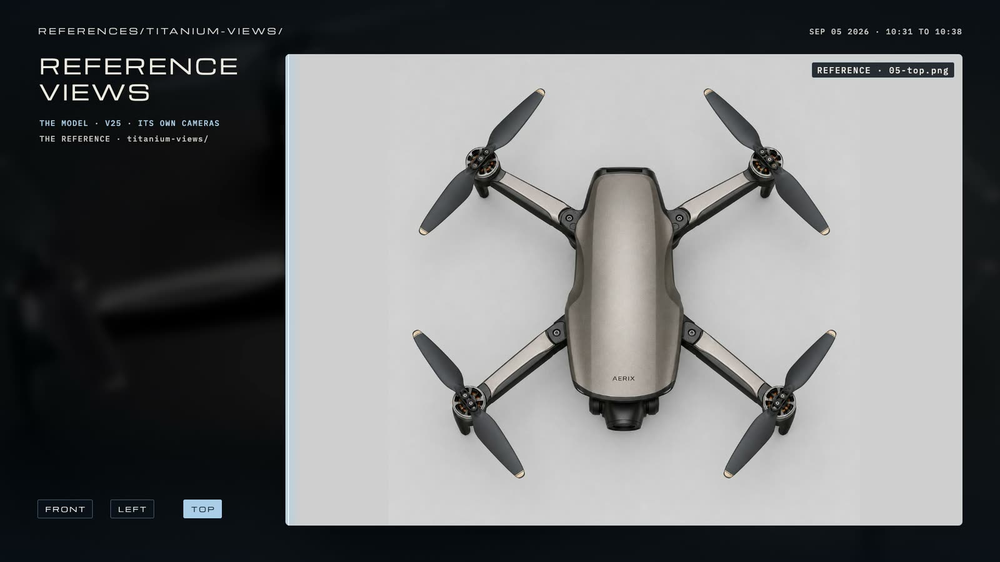
02
Reference views
Also called Turnaround sheet, orthographic views
The same design generated from every side, front, side, back, top and underneath. They give the agent something to compare its model with from every angle. Anything that wasn't in the first image, like the back, the image model has to make up, so check those views first.
In the course · Part 1, Three designs
Copy-paste prompt
From my chosen concept image, generate reference views of the same [PRODUCT]: front, side, back, top, underneath and a three-quarter view. Keep the exact same design, proportions, materials and colours in every view, on a plain light studio background, the whole object in frame and no strong perspective. Save them in references/ with the prompt you used for each, and tell me which details you had to invent because they weren't in the original image.
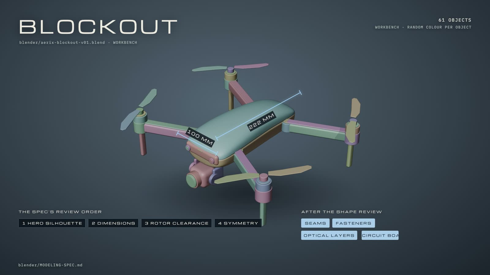
03
Blockout
Also called Block-in, greybox
The rough shape in simple blocks, so you get the proportions right before you spend any time on details. AERIX's first blockout looked thin next to its reference, and V02 made the body longer and wider before anything else. It even left space inside for the parts that came much later.
In the course · Part 1, The blockout
Copy-paste prompt
Start with a blockout of my [PRODUCT] in Blender: the rough shape in simple blocks, grey only, no details, at real scale in metres. Make each part its own named object ([body, arms, motors, propellers, gimbal, legs]). Match the proportions of my reference views, and leave empty space inside the body for the parts I'll add later. Render it next to the reference from the same angles and list where the proportions differ most.
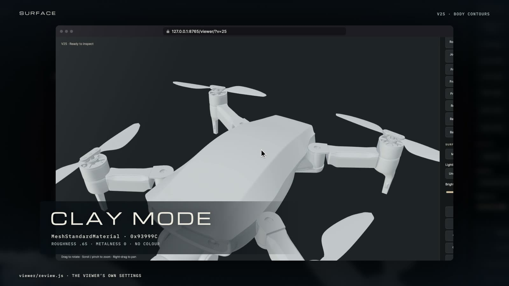
04
Review viewer and clay mode
Also called Model viewer, matcap preview
A small viewer in the browser to check each version: spin the model, zoom in, switch versions and save a screenshot of anything that looks wrong. Clay mode removes the colours so you only judge the shape, and a side light shows every edge.
In the course · Part 1, The viewer
Copy-paste prompt
Build me a small local Three.js viewer for my model's versions: orbit and zoom, a version picker that loads each exported GLB, buttons for the front, side, top and three-quarter views, and a screenshot button. Add a clay mode that swaps every material for one plain matte grey, so I only judge the shape, and a low side light I can turn on to show every edge and dent. Run it on a free local port.
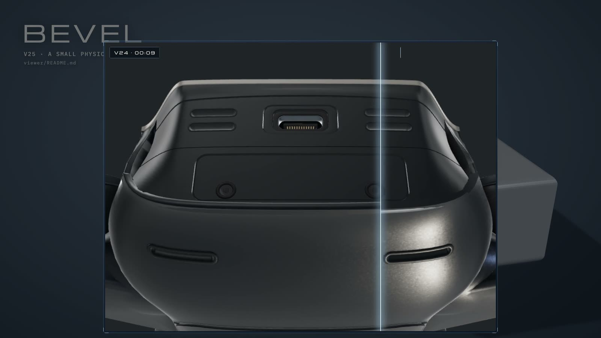
05
Bevel
Also called Chamfer, edge rounding
A tiny rounded edge. No real product has a perfectly sharp corner, so a small bevel catches a thin line of light, the way moulded plastic and machined metal do.
In the course · Part 1, The last details
Copy-paste prompt
On [PART], the edges look too sharp and catch the light wrong in this screenshot. Add a small bevel to its outer edges (about [0.5 mm] at real scale, 2 or 3 segments) so they catch a thin highlight like a moulded part. Keep its shape and size the same, change only this part, and save it as the next version.
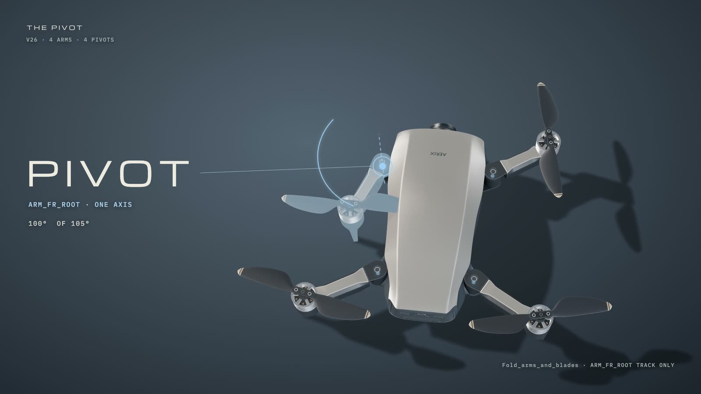
06
Pivot
Also called Origin, hinge point
The point a part rotates around, like a door on its hinge. When every arm and blade turns around its own pivot, the drone can fold, and later each part can move on its own.
In the course · Part 1, Folding
Copy-paste prompt
Set the origin of each moving part of my model to the point it really rotates around: each arm at its hinge, each propeller blade at its root, the gimbal at its joint. Give them clear names (ARM_FL_ROOT and so on). Then make a folded pose as an animation in the file: the blades line up, then the arms swing in along the body. Render the open and the folded drone from the top.
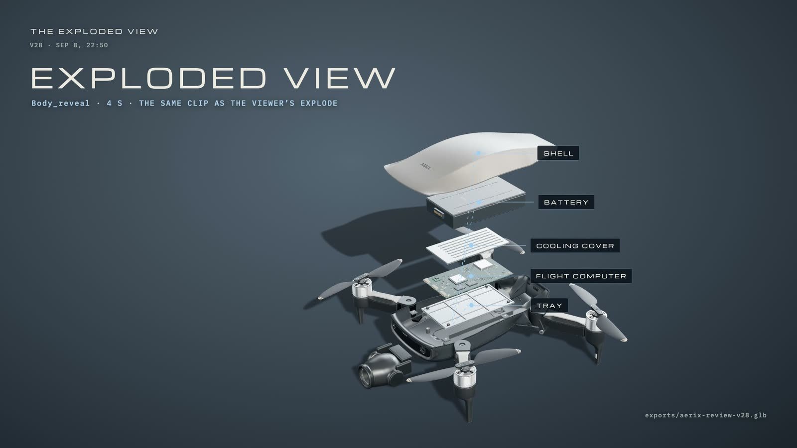
07
Exploded view, in the model
Also called Exploded assembly
Each group of parts inside the drone has its own name and its own pivot, so it can pull away from the others. That's what lets the page open the drone later, and it only works because the inside was modelled to fit the real shell.
In the course · Part 1, The inside
Copy-paste prompt
Prepare my model for an exploded view. Group the inside into named parts ([shell, battery, cooling, flight computer, frame]), each with its own pivot, all fitted inside the real shell. Add an animation in the file that pulls the groups apart along one axis with even gaps and brings them back. In my viewer, show the assembled and the exploded model side by side, with a slider to open each layer.
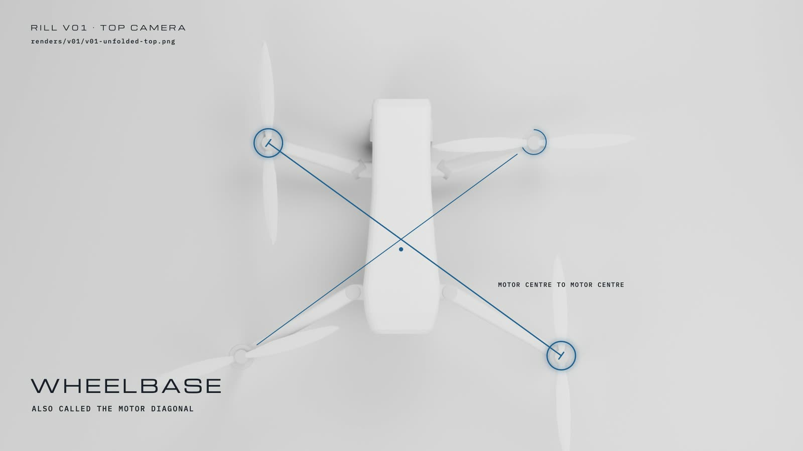
08
Wheelbase
Also called Motor diagonal
The distance between two opposite motors, corner to corner. It's one of the key numbers when a drone is built from real measurements instead of a picture.
In the course · Part 1, Real numbers
Copy-paste prompt
Find 2 or 3 real [foldable camera drones] with official published dimensions: folded and unfolded size, wheelbase (the diagonal between opposite motors), propeller diameter and weight. Put them in a table with the source links, recommend one and tell me why, then wait for me to pick. We use only its numbers. Never its name, logo or design details.
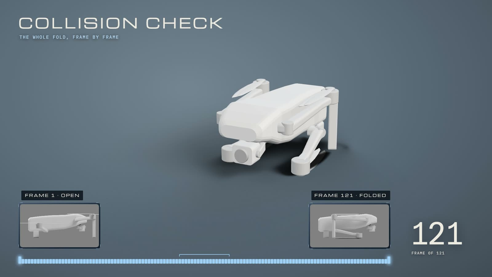
09
Collision check
Also called Interference check
It checks every frame of a movement, not only the open and the folded positions, for parts that go through each other. On the second drone it caught the front legs hitting the rear arms. A part that hits nothing can still be floating, so check that every part connects back to the body too.
In the course · Part 1, A grey model that folds
Copy-paste prompt
Check my fold animation for collisions: step through every frame from open to folded, test every pair of parts for intersections, and report the frame and the two parts for each hit. Then check that every part connects back to the body, with no floating parts and no faces collapsed to a point. Show me the worst frame before you fix anything.
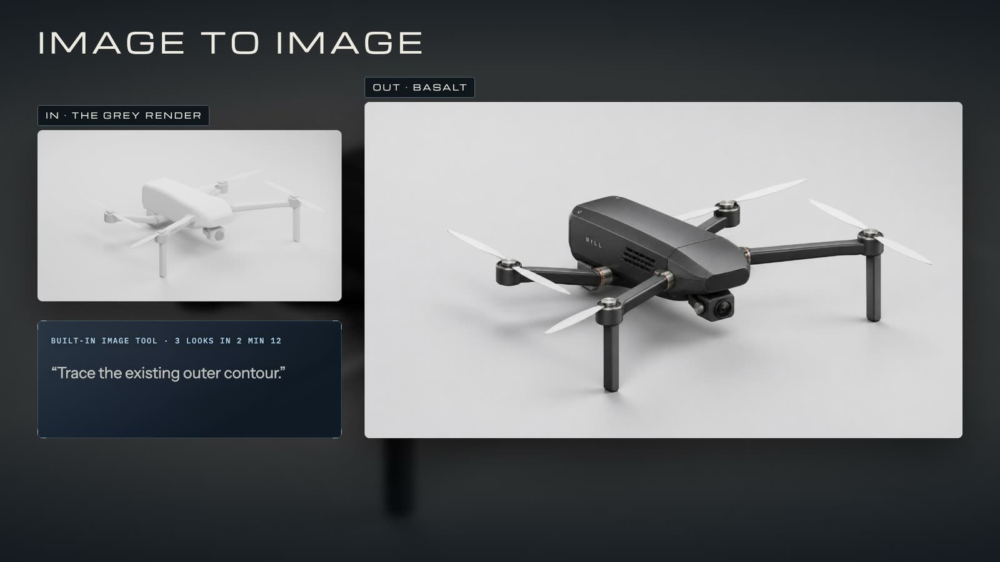
10
Image to image
Also called Restyle from a render
A render of your grey model goes in, and only the surfaces change, so the style images still match the model exactly. The second drone got three looks this way, and the chosen one was made from the front, side and back too.
In the course · Part 1, Style on top
Copy-paste prompt
Render my grey blockout from the three-quarter view in a clean studio, then restyle that render into three design directions with image to image. Keep the exact silhouette, camera angle, part positions and sizes, and change only the surfaces: the shape language, materials, colours and small details. Realistic product photography, the whole object in frame, no text. Save them with their prompts in concepts/ and wait for me to pick one.
Part 2 · The landing page
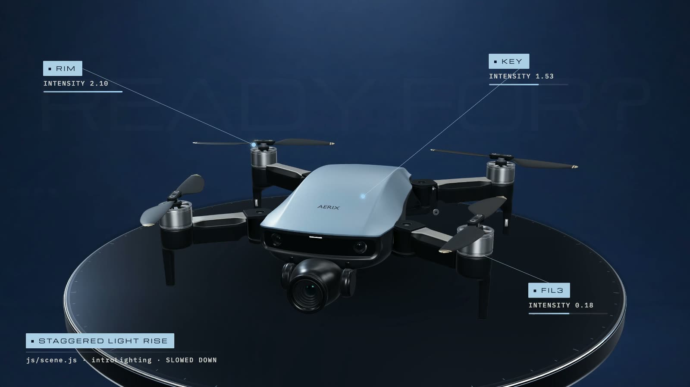
11
Loader inside the hero
Also called Preloader as an intro, staged light rise
The loader sits on top of the hero, so when it finishes you're already there. The lights come up one by one, first the rim light around the edges, then the main light, called the key light. The counter waits for the first real frame of the 3D, so it can never run ahead of the download.
In the course · Part 2, The loader
Copy-paste prompt
Replace my loading screen with a loader that lives inside the hero. While the 3D model loads, show the real hero scene in near darkness with a small counter from 0 to 100 tied to the actual download, and hold it below 100 until the first frame of the 3D has rendered, so it never runs ahead. Then bring the lights up in order: a rim light first to draw the silhouette, then the key light, over about 2.5 seconds with a slow ease-out. Keep the camera still and hand straight over to the hero, with no fade to another screen.
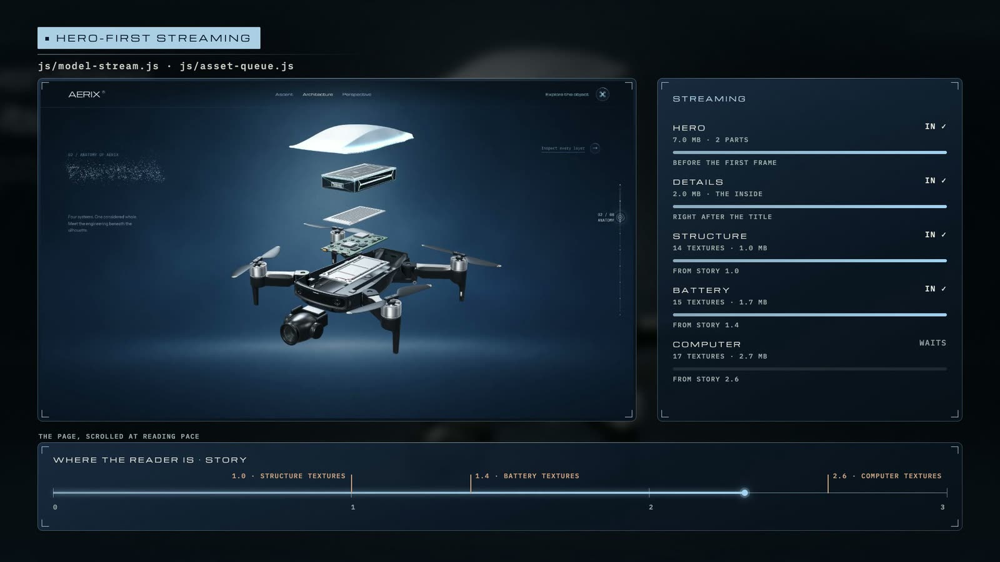
12
Hero-first streaming
Also called Staged loading, progressive loading
The full model reached 138 MB, all loaded before the first frame. Now a light version, about 7 MB with only what you see at the top, comes first, and the inside of the drone and the sharp textures load in the background while you read. Everything after the hero goes through one queue, one file at a time, most urgent first, so the scroll never stutters.
In the course · Part 2, The weight of the model
Copy-paste prompt
My 3D model is too heavy to load before the first frame. Split it into a light hero file (only what's visible at the top, with small textures) and a details file (the inside parts), list them in a manifest, and load the hero first. Stream the details and the full-size textures in the background through one queue, most urgent first, one file at a time, and swap them in without a visible jump. Check the close-ups up close after the split, not only the wide view.
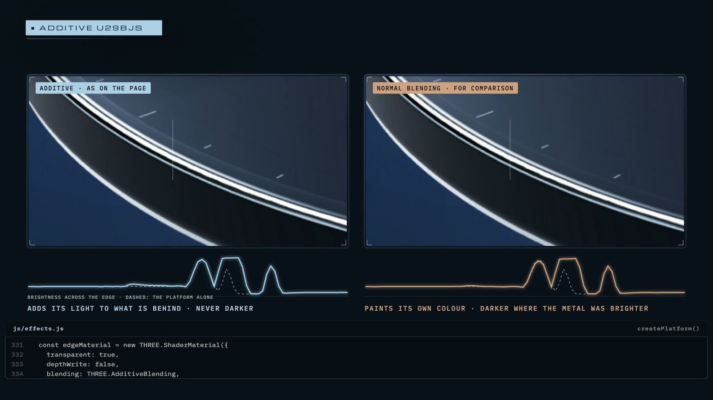
13
Additive blending
Also called Additive glow
The thin lines of light around the platform don't cover what's behind them. Their light gets added to it, like a spotlight, so it can only make things brighter.
In the course · Part 2, The platform
Copy-paste prompt
Add a premium edge light to my [platform]: a thin bright line running around its top edge with a soft glow around it, and a fainter one along the bottom edge. Draw the lines and the glow with additive blending (THREE.AdditiveBlending, depthWrite off), so their light adds to what's behind them and can only brighten it. Let the glow breathe very slowly.
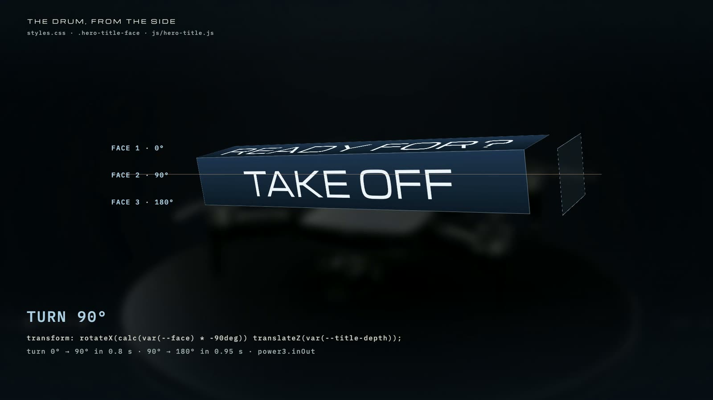
14
Rolodex title
Also called 3D text flip, word drum
The title is three words on the sides of a drum, and the drum turns twice: Ready for, Take off, then Ascent. A little countdown before the word lands.
In the course · Part 2, The title
Copy-paste prompt
Make my hero title a Rolodex: put three words on the faces of a 3D drum ([READY FOR?], [TAKE OFF], [ASCENT]) and flip it one word at a time, each flip about 0.6 s with a heavy ease-out and a small overshoot. Shade the faces as they turn away so it reads as a real drum. Use CSS 3D transforms (perspective and rotateX), not a canvas, and keep the final word readable for screen readers.
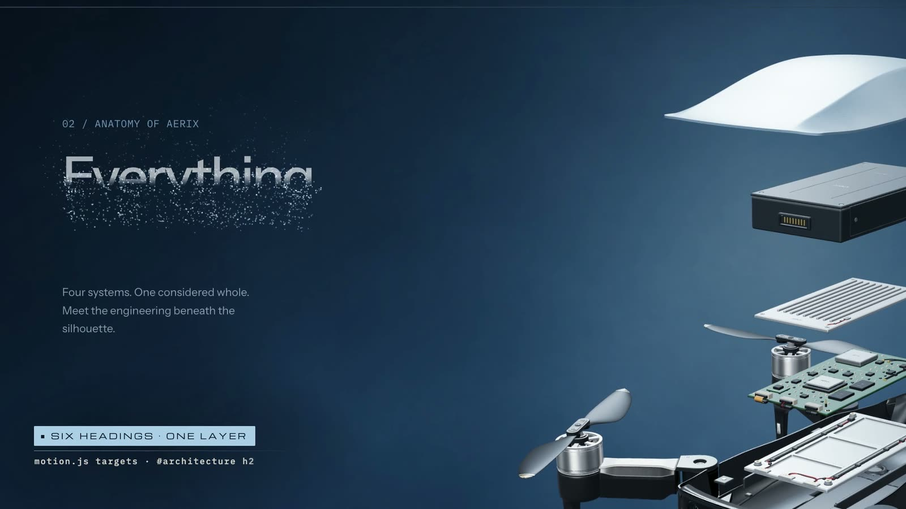
15
Particle dissolve
Also called Text to particles, disintegration
The page draws the word into a hidden canvas, and every few pixels where the letter is solid become a dot. One WebGL layer on top of the page flies the dots away as you scroll and gathers them back when you scroll up. The big headings further down do the same, and once a heading is particles, it's gone.
In the course · Part 2, The title
Copy-paste prompt
When my big heading [ASCENT] leaves, make it break apart into particles. Draw the text into a hidden canvas, turn every few solid pixels into a point on one WebGL layer above the page, and as the visitor scrolls, push each point up and outward with a little random drift while it fades. Tie the dissolve to the scroll so scrolling back up gathers the word again, and once it has fully dissolved, hide the real text so it never comes back faintly. Use the same layer for the other big headings.
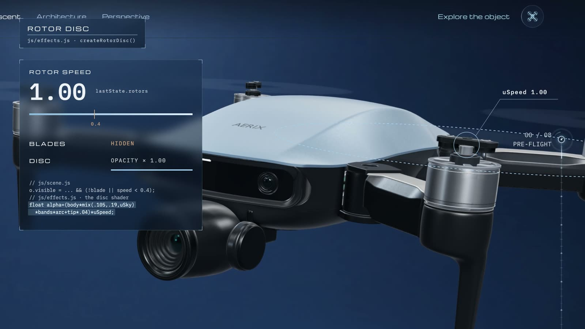
16
Rotor disc and banking
Also called Fake motion blur, flight sway
The blades in the model don't move. When the rotors speed up, the real blades are hidden and a shader draws a see-through disc in their place, the way fast blades look on camera. The drone turns about 17 degrees and tilts up to 7, then steers back the other way, like a pilot correcting.
In the course · Part 2, The takeoff
Copy-paste prompt
My drone model's propellers are static. When it takes off, hide each blade and fade in a thin see-through disc in its place, drawn by a shader with a radial blur and a few faint streaks, spinning fast, so it reads as rotors at speed. While the drone climbs with the scroll, turn it about 17 degrees and tilt it up to 7, then steer it back the other way like a pilot correcting, all driven by the scroll so it plays backwards too.
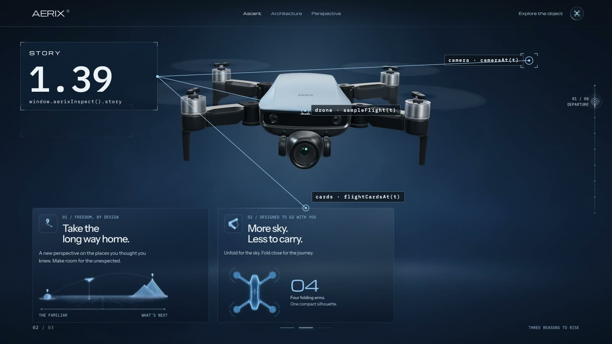
17
Story clock
Also called Scroll-driven 3D, scrollytelling
The whole page runs on one number, from 0 to 8, one step for each chapter. The scroll sets that number, and the camera, the drone and every card read it. Nothing plays on a timer, so scroll back up and every move plays in reverse. Lenis makes the scroll smooth and a little heavy, and GSAP keeps the scroll and the 3D on the same clock.
In the course · Part 2, The takeoff
Copy-paste prompt
Build my landing page as one Three.js scene behind the content, with one camera and one model for the whole page. Map the scroll position to a single story number from 0 to [NUMBER OF CHAPTERS], one step per chapter, and drive the model, the camera and every section's text from that one number, so everything stays in sync scrolling down and back up. Nothing plays on a timer. Use Lenis for smooth, weighted scrolling and GSAP ScrollTrigger to read the position, on the same clock as the 3D.
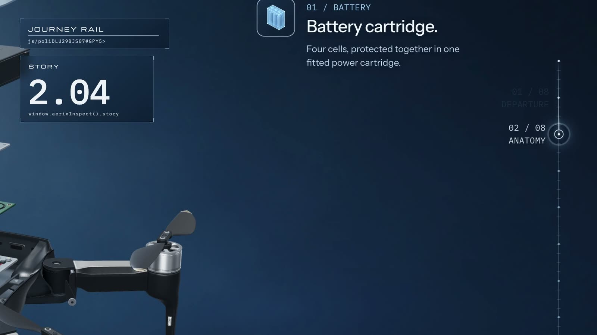
18
Progress rail
Also called Scroll progress, chapter navigation
A thin rail on the right shows how far into the flight you are, chapter by chapter.
In the course · Part 2, The takeoff
Copy-paste prompt
Add a thin vertical progress rail on the right edge of my page: one small node per chapter, a line that fills as the visitor scrolls, and the current chapter's number and name next to the active node (like 03 / 08 ENERGY). Clicking a node smooth-scrolls to its chapter. Hide the browser's own scrollbar but keep this rail.
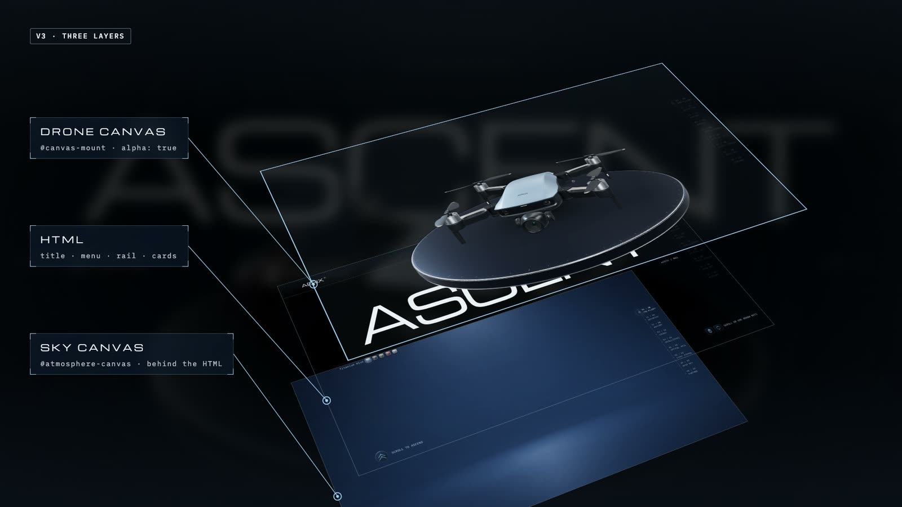
19
Layer sandwich
Also called Two canvases, 3D in front of text
The page is three layers. The sky is drawn on a canvas at the back, the text sits in the middle, and the drone has its own see-through canvas at the front, so it can really fly in front of the words and stay solid.
In the course · Part 2, In front of the text
Copy-paste prompt
Split my page into three layers so the 3D can pass in front of the text: a background canvas for the sky at the back, the HTML text in the middle, and a second transparent WebGL canvas for the model at the front (alpha true, pointer-events none). Keep both canvases on the same camera and the same scroll clock, and never fade the model out to hide an overlap.
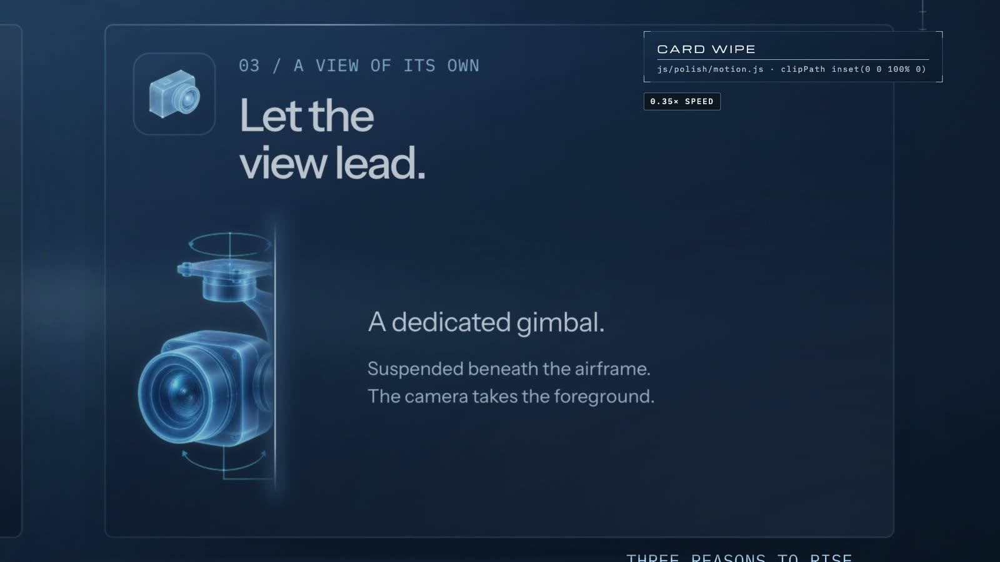
20
Card scan reveal
Also called Scanline wipe, clip-path reveal
The cards scan in from top to bottom. The drawings are images, but the scan and the light running around each frame are all code.
In the course · Part 2, The three cards
Copy-paste prompt
Reveal each info card with a scan: a bright horizontal line sweeps from top to bottom over about 0.9 s and uncovers the card behind it (animate clip-path inset from 100% to 0), then small corner brackets snap into the corners and a thin light runs once around the border. Fade the card's drawing in behind the scan. Trigger it when the card first becomes visible, and use the same reveal on every card so the page feels consistent.
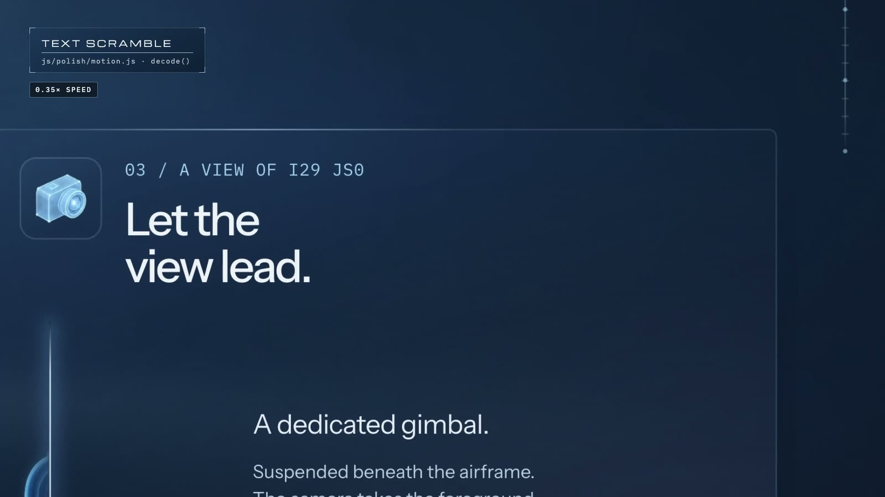
21
Text decode
Also called Text scramble
Each label scrambles through random letters before it settles, and the menu does the same when you hover. You'll see it everywhere on the page.
In the course · Part 2, The three cards
Copy-paste prompt
Add a text scramble to all the small uppercase labels on my page: when a label appears, each letter cycles through random characters (A to Z, 0 to 9 and a few symbols like / and #) and settles on the real letter from left to right, over about 0.5 s. Keep the label's width fixed while it scrambles so nothing jumps. Run it each time a label first appears, and on the menu links when the mouse goes over them.
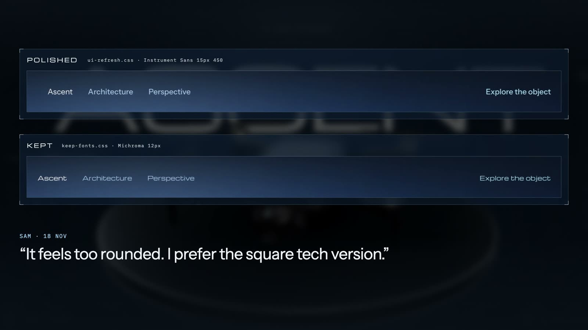
22
Type and colour for a tech product
Also called Design system, theme
Since it's a high-tech product, the font, the colours and the text animation all have to fit that theme, so pick them at the start. The title, the logo and the menu use Michroma, a wide, square font. A rounder font felt too soft.
In the course · Part 2, The three cards
Copy-paste prompt
Set up a type and colour system for a high-tech product page: a wide, squared display font for the logo, the title and the menu (like Michroma), a clean sans for body text (like Instrument Sans), and a mono for small uppercase labels with wide letter spacing (like IBM Plex Mono). Palette: deep navy backgrounds (#07111f to #0b1a2e), one cool blue accent (#6aa8e8) and pale blue text (#cfe4ff). On text, use decodes and quick slide-ups, never soft fades or slow blurs.
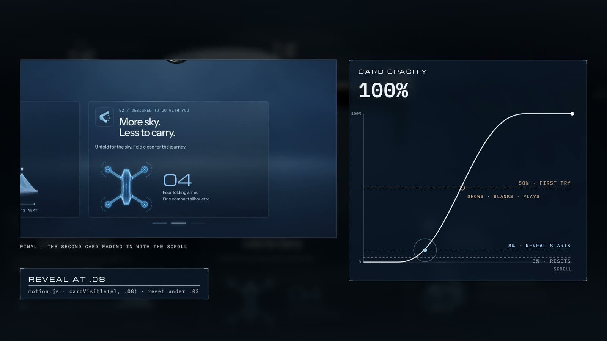
23
One reveal for every card
Also called Reveal on view, IntersectionObserver
At first the reveal only ran when a chapter started, so the cards that came in later in the same chapter never got it. Now one small script watches every card and plays the same reveal each time one comes into view, starting as soon as the card begins to fade in.
In the course · Part 2, One reveal for every card
Copy-paste prompt
Some of my cards animate and others feel static, because the reveal only runs when a chapter starts. Replace that with one IntersectionObserver that watches every card and plays the same text reveal whenever a card comes into view. Start it as soon as the card begins to fade in, so its text never shows, blanks out and plays again.
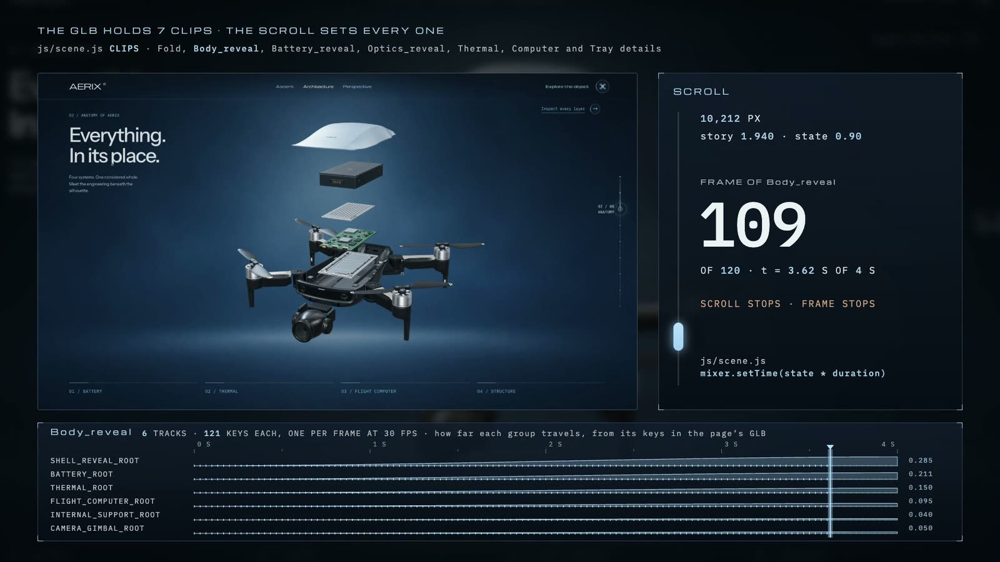
24
Scrubbing
Also called Scroll-scrubbed animation
The opening of the drone is an animation saved in the model file, but the page doesn't play it on a timer. The scroll picks the frame, so scrolling up plays it backwards.
In the course · Part 2, The exploded view
Copy-paste prompt
My GLB has an animation called [EXPLODE]. Don't play it on a timer. Create its action with a THREE.AnimationMixer, pause it, and on every frame set its time from the scroll (action.time = progress × duration, then mixer.update(0)), so the scroll picks the frame and scrolling back up plays it in reverse.
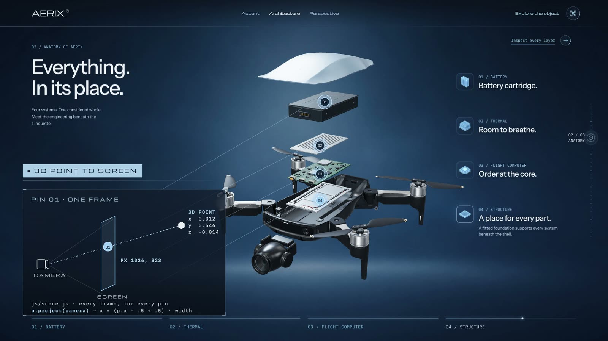
25
Numbered pins
Also called Numbered callouts, hotspots
Instead of leader lines pointing everywhere, each part gets a number that matches its label. Every frame, the page finds where each part lands on screen and moves its pin there. That's projecting a 3D point to the screen.
In the course · Part 2, The exploded view
Copy-paste prompt
Label the parts of my exploded view with numbered pins instead of leader lines. Every frame, project each part's centre from 3D to the screen (vector.project(camera)) and draw a small glowing disc with its number (01, 02, 03) there, with a soft pulse on the active one. Show the matching numbered labels in a panel at the side, and highlight a pin and its label together as that part becomes current.
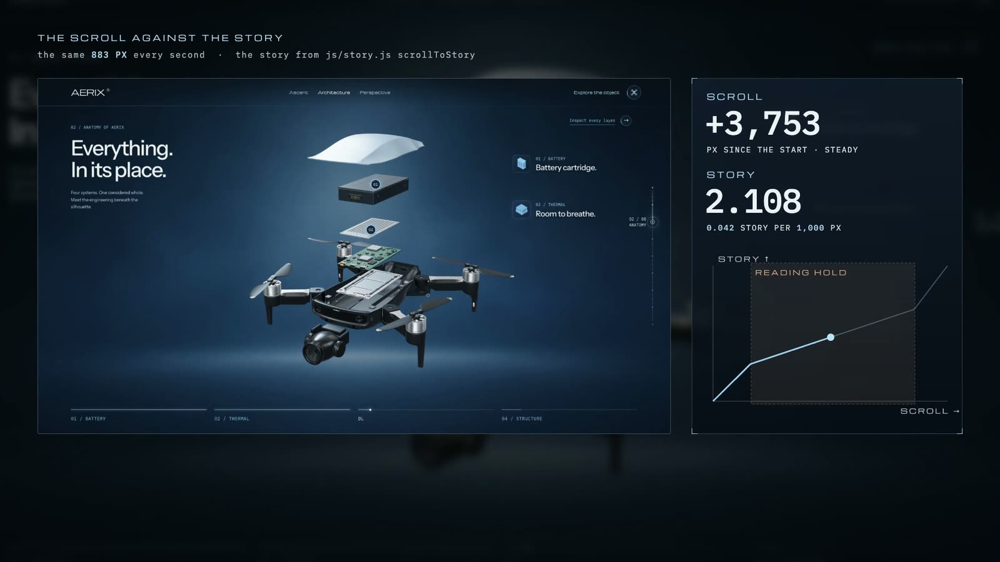
26
Hold
Also called Scroll hold, dwell
Here the page slows down. The scroll keeps going, but the story barely moves, so you have time to read.
In the course · Part 2, The exploded view
Copy-paste prompt
Add a hold to my scroll-to-story map: give [CHAPTER] a long stretch of scroll where the story number moves only a little, with eased corners going in and out, so the visitor keeps scrolling while the scene barely moves and there's time to read the labels. It has to work the same way scrolling back up.
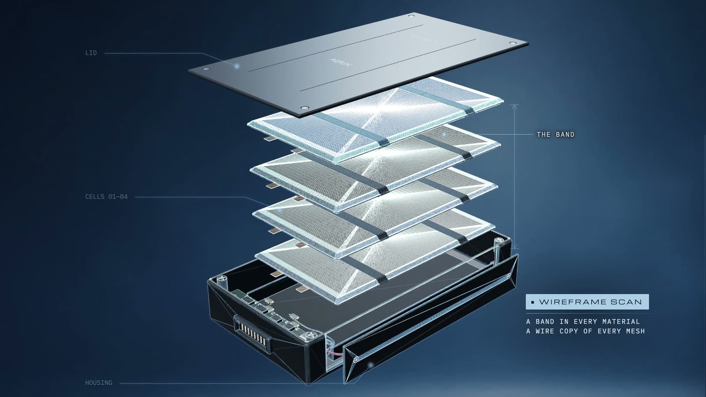
27
Wireframe scan
Also called Scan reveal, wireframe sweep
A bright band moves up through the part, and right behind it you see its wireframe, the lines the 3D shape is made of.
In the course · Part 2, Battery, board and lens
Copy-paste prompt
When a 3D close-up comes into view, run a scan through the model: a bright horizontal band moves from the bottom to the top of the part over about 1.7 s, while a thin wireframe copy of the same meshes trails just behind the band and fades out. Add the band to every material with onBeforeCompile so the original materials stay untouched. Fade any labels out before the parts move back together.
28
Lens portal
Also called Portal transition, fly-through mask
The camera flies into the lens and you come out over a city at night. The ring is part of the page, not the 3D, and it shows the same picture as the sky behind it, so when it opens you're already in the view and nothing jumps.
In the course · Part 2, Through the lens
Copy-paste prompt
Move into the drone's point of view by flying through its lens: push the camera toward the lens, then show the next view inside a ring drawn by the page (a CSS clip-path circle) that matches the lens opening. Fill the ring with the same picture the sky shows behind it, hold for a beat so the visitor sees the edge, then grow the ring past the corners of the screen as the camera keeps pushing in, so nothing jumps.
29
Crossfade between worlds
Also called Dissolve transition
Each place is a single picture, painted into the sky behind the drone by a shader. The shader slowly zooms into the picture so it feels like flying, and the scroll fades one place into the next.
In the course · Part 2, The worlds
Copy-paste prompt
Show a different place behind my 3D drone for each step of this chapter, each one a single picture. Paint them into the sky with one fragment shader: pass every picture plus one mix value per transition, zoom very slowly into the current picture so it feels like flying, and dissolve from one to the next over a short stretch of scroll with a smoothstep ease. Cross the captions on the same timing so the old caption is gone before the new one appears.
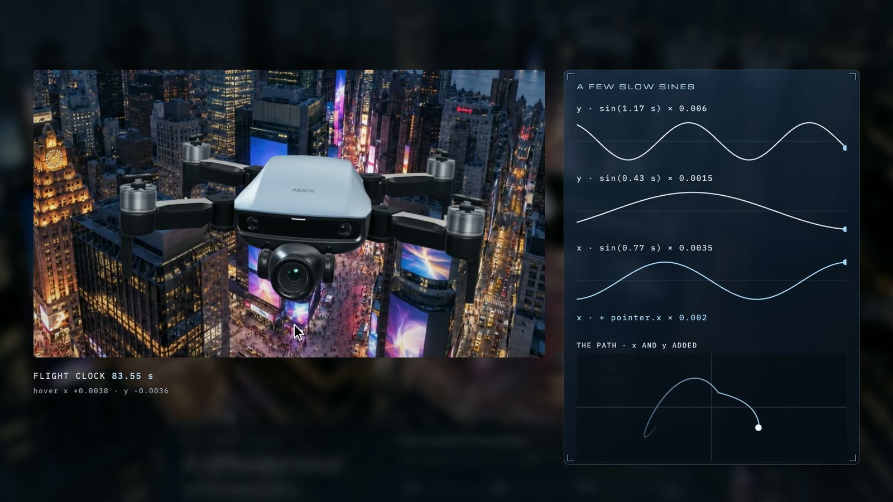
30
Idle animation
Also called Idle hover, pointer flight
On the last view the drone never stands still. It bobs on a few slow movements at different speeds, so it never repeats, and your mouse nudges it a little.
In the course · Part 2, The worlds
Copy-paste prompt
Give my drone an idle animation so it never stands completely still: add three or four slow sine movements to its height, roll and yaw, each at a different speed that doesn't divide into the others, so the motion never repeats. Then let the mouse nudge it a little (up to about 6 degrees of bank toward the pointer and a short drift), smoothed with a lerp so it feels weighted.
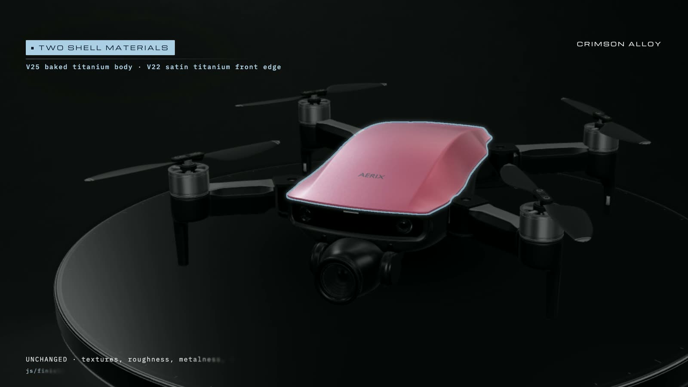
31
Landing and finish picker
Also called Product configurator, colourways
The drone lands back on the platform it took off from, on all four feet, and the rotors wind down. Then you can switch it between five colours. Only the top of the shell changes, and everything else on the model stays the same. Each colour button is a rounded square with a little shine, a brushed texture and a small bevel.
In the course · Part 2, The landing
Copy-paste prompt
End my page with the drone landing back on its launch platform, on all four feet, with the rotors winding down. Then add a finish picker: five rounded-square swatches with a little shine, a brushed texture and a small bevel (layered gradients), and clicking one changes only the top shell's material colour with a short 0.6 s blend, leaving the rest of the model as it is. Show the finish name next to the swatches.
01 · Start a page like this
Starter prompt for the landing page
It lays out the whole page, section by section, in the order you scroll. Give it your own model and change the sections to fit your product, then add the effects one at a time from the vocabulary above.
Template
Build a scroll-driven product landing page in Three.js for my 3D [drone] (GLB attached, with the inside parts modelled).
Concept: the whole page is one takeoff. As the visitor scrolls down, the drone rises.
Sections, in order:
1. Loader: the drone sits on a launch platform in the dark, inside the hero. The lights come up, rim light first, then the key light, with a small counter to 100 that never runs ahead of the download.
2. Hero: a 3D Rolodex title that flips through three words, then breaks into particles as the scroll starts.
3. Ascent: the drone lifts off. The rotors become see-through spinning discs and the drone banks as it climbs. Three short cards that scan in from top to bottom.
4. Exploded view: the drone opens into its layers, scrubbed by the scroll, and each part gets a numbered pin that matches its label. Hold the scroll here so there's time to read.
5. Close studies: the battery, the flight computer and the camera, each with a wireframe scan sweeping through it.
6. Through the lens: the camera flies into the drone's lens and opens onto a city at night.
7. Flight worlds: views from the drone (mountains, forest, coast, city), each a single picture painted into the sky by a shader that slowly zooms in, crossfading into each other on the scroll.
8. Landing: the platform comes back into view and the drone lands where it started, then a finish picker with five colours.
Style: a high-tech product. A wide, squared display font, a mono for small labels, deep navy with one cool blue accent. Labels decode letter by letter, never soft fades.
Build: one camera and one model the whole way, one story number from 0 to 8 driven by the scroll, Lenis for smooth scrolling and GSAP ScrollTrigger on the same clock. Split the model so a light hero version loads first and the rest streams in. A progress rail on the right, and make it work on a phone.
02 · A 3D model from one image
The real concept prompt behind AERIX
AERIX started from three concept images made with the image tool inside Codex, and this is the real prompt for the titanium one, word for word. Write your own design direction in the last part, then follow the steps of part one: reference views, a blockout, the review viewer, then one part at a time.
Real prompt, word for word
Use case: product-mockup. Create one photorealistic premium industrial-design drone concept image for selection before Blender modeling. Input image is a material-quality and engineering-detail reference, not an exact copy. Match its exquisite microtextured shell, precision panel seams, subtly beveled edges, real fasteners, machined motor detail, optical lens coatings and restrained premium finish. A physically plausible consumer camera quadcopter with exactly four arms, four motors and four two-blade propellers, plausible non-overlapping rotor clearance, functional folding hinges and a proper front underside 3-axis gimbal camera. All parts attached and assembled. Single drone only, front three-quarter elevated studio beauty view showing top, front and side. Entire drone including EVERY blade tip and landing foot fully within image, generous 12% clear margin around silhouette, no crop anywhere. Landscape 3:2 composition, neutral charcoal studio floor/backdrop, soft large studio highlights and subtle rim lighting, sharp detailed product photography, realistic restrained reflections, no science-fiction effects. Text: only one small accurately spelled 'AERIX' wordmark on nose or top shell. Absolutely no other text, no slogans, labels, numbers, title, overlay or watermark. Design direction 2: Streamlined titanium camera drone, visibly different silhouette from reference. Smooth low oval wedge fuselage with continuous curved shoulder surfaces, satin warm titanium metal upper shell, dark graphite underbody, swept sculptural folding arms with tapered aerofoil sections and clearly engineered hinge joints. Silver machined motor collars with tiny warm bronze detail. Flush dark horizontal nose sensor visor incorporating two optics, restrained small status light. Suspended spherical-shouldered compact gimbal camera with black lens barrel. Elegant aerodynamic refined design, no sharp central ridge. Premium plausible manufactured product.
03 · A 3D model from real measurements
The real brief behind RILL
This is the brief I sent GPT-6.2 Astra in Codex to start the second drone, word for word. Change the product, the folder and the Blender path to yours. Every message I sent after it, version by version, is on the pack's prompts sheet.
Real prompt, word for word
I want to build a new 3D drone in Blender with you, structure first.
Two months ago I built a drone in Blender with GPT-6 Astra, starting from a GPT Image reference. It looked good, but the image wasn't a real product, so the arms, hinges and legs never quite fit, and a lot of versions went into fixing that. This time I want to try it the other way round. We start from the real dimensions of an existing drone, build a grey blockout that actually works, and only then design the look on top of it. I'm recording this for a YouTube video about GPT-6.2 Astra, so every step has to be visible and saved.
## Rules
- Work only in this folder. Don't open or reuse any of my older drone projects. This one starts fresh.
- Blender 5.2.0 LTS is at /Applications/Blender.app. Drive it in the background with Python scripts. Keep every script in `scripts/` so the model can be rebuilt.
- Every version is a new file (`blender/drone-v01.blend`, `v02`, ...). Never overwrite a version. Render the same angles with the same lighting every time, so before and after line up.
- At each ⏸ review point, stop and wait for me. Give me a short summary and tell me what to look at.
- The final drone must not look like the real product. Use only its dimensions, proportions and the way it folds. No brand, no logo, no copied design details. Give it its own one-word name, used only as a small logo on the shell.
- Photos of the real product stay in `references/real/` for your own use. They won't be shown in the video.
## Stage 1: find the real structure
- Find 2 or 3 real foldable camera drones with a 3-axis gimbal and official published dimensions: folded and unfolded size (L × W × H), diagonal wheelbase, propeller diameter and weight. Use the manufacturers' spec pages, and a teardown if one exists, so we know the inside layout too.
- Save `references/spec-sheet.md` with a table and the source links, plus a few photos per product (top, side, front, folded).
- Recommend one and tell me why (clear dimensions, a good folding mechanism, enough views to model from).
⏸ Review 1: I pick the base product.
## Stage 2: grey blockout (V01)
- Build it at real scale, in meters, from the chosen product's numbers. Grey clay only, no design detail yet.
- Separate named objects with correct pivots: body, four arms, four motors, propellers (two blades each), gimbal and camera, landing legs, battery bay.
- Folding must really work. Make an unfolded and a folded pose with the hinges where the real ones are, and get the folded size close to the real folded size. Check that no parts pass through each other when folded.
- Render front, side, top, back and three-quarter at 1920 × 1080 (orthographic for front, side and top), unfolded and folded, in a neutral studio.
- Make a table of your measured dimensions against the real spec, with the difference in %.
- Export a GLB and build a simple local Three.js viewer (orbit, zoom, version selector, fold and unfold) on a free port, so I can inspect it and send you screenshots.
⏸ Review 2: I check the proportions and the folding before any styling.
## Stage 3: design on top of the blockout
- Render the blockout's three-quarter view in a clean studio.
- Use image generation to restyle that render into three different design directions, image to image. Each one keeps the exact silhouette, camera angle, arm and hinge positions, propeller size and gimbal position. Only the surfaces change: the shell's shape language, materials, colours and details. Realistic premium product photography, the whole drone in frame and not cropped, and no text except the small one-word logo.
- Save them in `concepts/` with the exact prompts you used.
⏸ Review 3: I pick one direction.
- Then restyle the front, side, top and back blockout renders the same way for the chosen direction, one view at a time, so every view is locked to the same geometry and the views agree with each other. These become the modelling references.
## Stage 4: the detailed model
- Model the chosen design on top of the blockout, version by version (V02, V03, ...). Keep V01's proportions and folding.
- Work in this order: shell surfaces and seams, arms and hinges, motors and propellers, gimbal and lens (real depth in the glass), legs, then materials and small details (bevels, screws, vents, sensor windows).
- Compare every version with the concept views from the same angle, side by side, and fix the biggest difference first.
- Render the same five angles for every version, plus a close-up of what changed.
⏸ Review 4 after each version. I'll give feedback with screenshots.
## The teach folder (important)
This build is going into a YouTube video and a course, so record everything in `teach/` as it happens, not at the end:
- `teach/session-log.md`: every message I send, word for word, with the time. Under it, a short summary of what you did, what came back and how long it took. Put the model you're running on at the top (set in Codex as GPT-6.2 Astra).
- `teach/journal.md`: the moments worth teaching. Why this product, the techniques (how the folding pivots were set up, how image to image kept the geometry), problems and how they were fixed, and turning points.
- `teach/decisions.md`: a table of every decision, who suggested it (me or you) and who decided.
- `teach/timeline.md`: start and end time of each stage and each version.
- `teach/shots/`: before and after images for every version, same angles, named by version.
- `teach/prompts/`: every image generation prompt, with its input image and the result.
Start with Stage 1.
The note I send after each version. Point at one part, say what feels wrong, and keep everything else as it is. Attach the screenshot.
Template
Here's a screenshot of [THE PART, for example the main lens] on the last version. [What feels wrong, in one sentence, for example: the glass has no depth, it looks flat.]
Change only this part and keep everything else exactly as it is. Save it as the next version, export it to the viewer, and show me the same view before and after, side by side.
05 · The polish pass
Polish without changing the page
For a page that already works. It asks for better motion and loading, not a redesign.
Template
Give my landing page a polish pass. Don't add, remove or reorder any section, and keep the layout and the copy.
Improve only:
- the animations: every text and card reveal plays each time it comes into view, nothing pops or blanks out
- the interactions: hover states on the menu and the buttons, the 3D reacting a little to the mouse
- the icons: one consistent set that fits the theme
- how it loads: a light version of the model first, the rest streamed in the background, a loader that never runs ahead
Work one section at a time from the top, and after each one, give me a short note of what changed and a screenshot before and after.